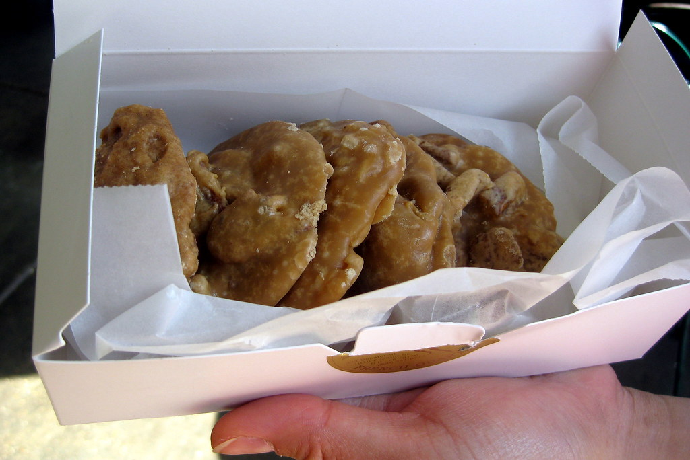

Pralines
Home

Description
Pecan Pralines (pronounced prah-leens) are a rich, creamy, melt-in-your-mouth
candy that is a hallmark of Creole confectionery. Originating in France with
almonds, New Orleans "Praline Ladies" substituted the local, abundant pecan
to create the version we love today. They are essentially a "cookie-shaped"
fudge—sweet, nutty, and buttery with a distinct crumbly-yet-creamy texture.
Ingredients
- 1 ½ cups granulated white sugar
- ¾ cup light brown sugar, packed
- ½ cup evaporated milk (or whole milk)
- 6 tbsp unsalted butter (¾ stick), cut into pieces
- 1 ½ cups pecan halves (lightly toasted for better flavor)
- 1 tsp vanilla extract
- A pinch of salt
Cooking Directions
- Prep : Line a baking sheet with parchment paper or wax paper. This recipe moves fast at the end, so have your spoons ready!
- Boil : In a heavy-bottomed saucepan, combine the white sugar, brown sugar, and milk. Bring to a boil over medium heat, stirring constantly.
- The Softball Stage: Continue cooking and stirring until the mixture reaches the "softball stage" on a candy thermometer (235°F to 240°F).
- Add Flavor: Once it hits the temperature, remove from heat immediately. Stir in the butter, pecans, vanilla, and salt.
- The "Cloudy" Phase: This is the secret step. Stir the mixture vigorously with a wooden spoon for 2–3 minutes. The mixture will begin to lose its glossy shine and become creamy and slightly opaque. As soon as it thickens enough to hold its shape, you must move quickly.
- Scoop: Use a tablespoon to drop mounds of the mixture onto your prepared parchment paper. They will spread into flat circles.
- Cool: Let them sit at room temperature for at least 30 minutes to harden completely. Store in an airtight container.